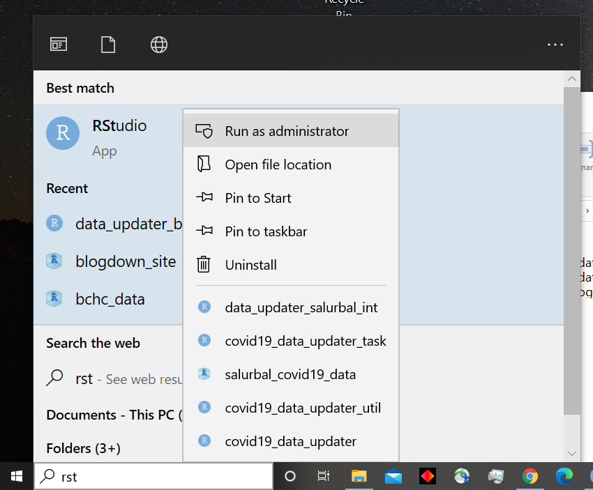
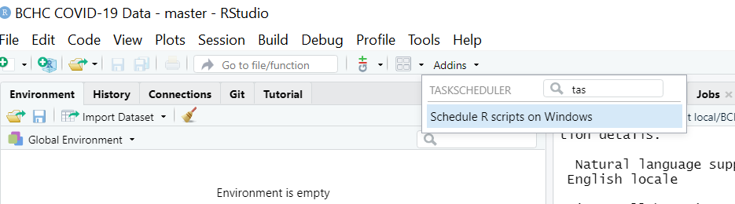
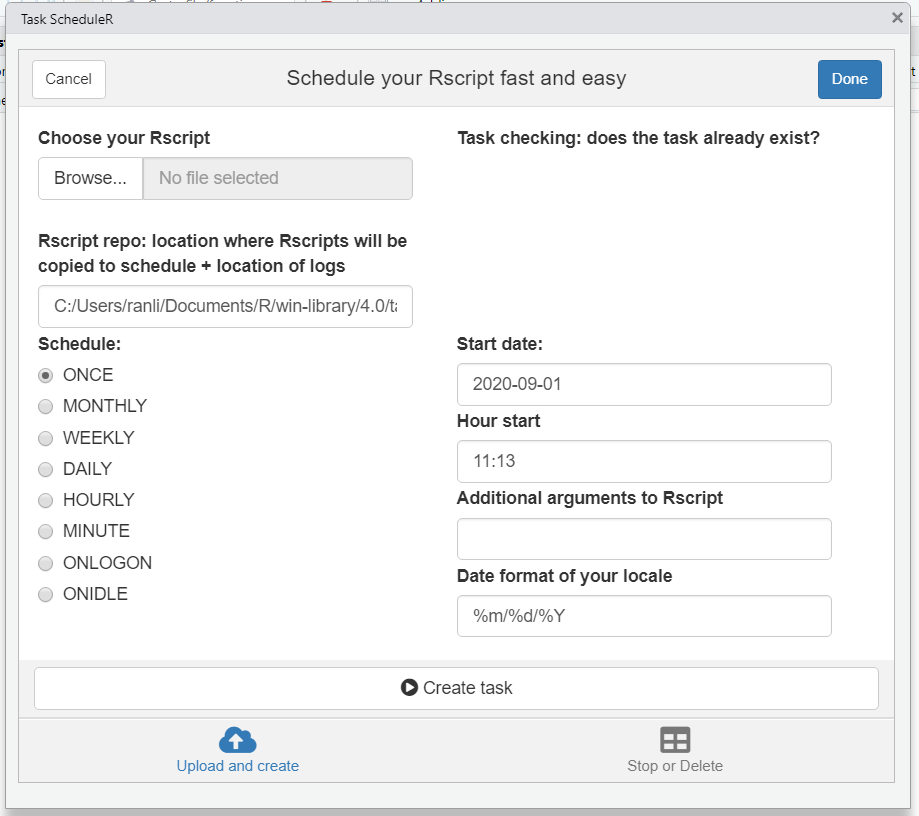
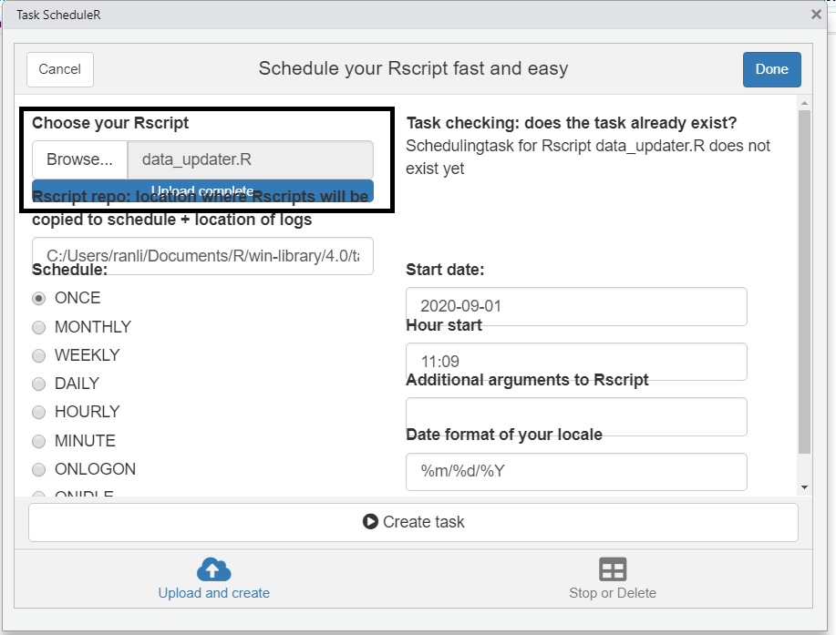
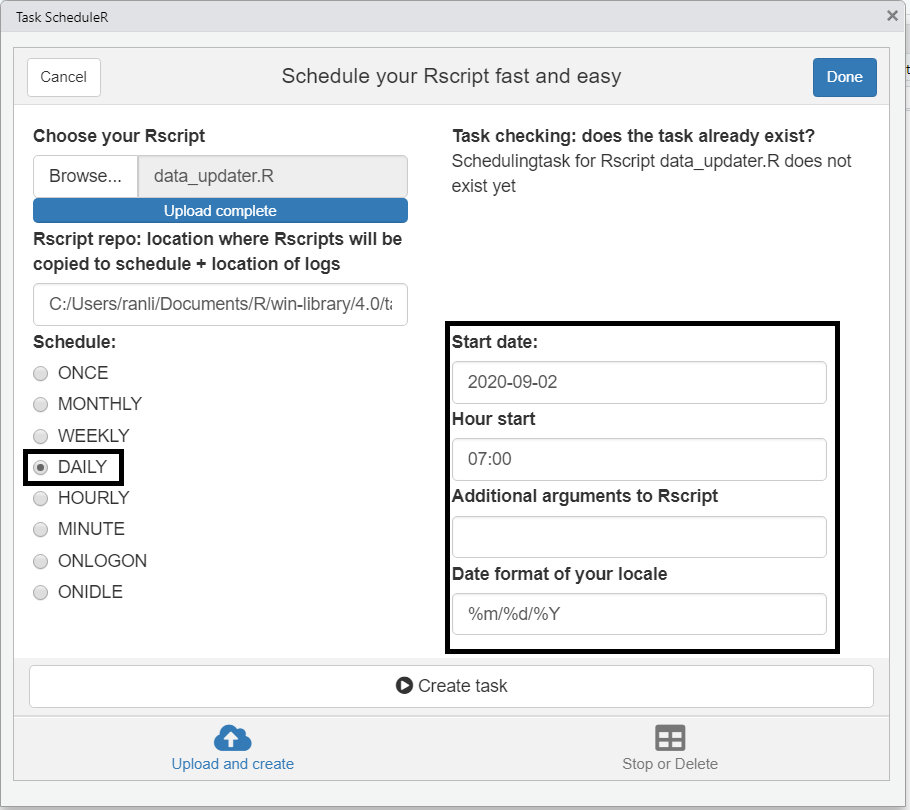
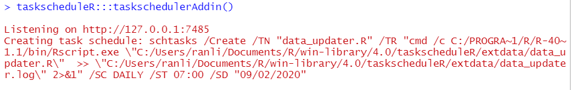

I recently started a data project which required me somehow schedule an R script that cleaned data for a shiny app to be run daily. This post will go over how to use taskscheduleR package to run an R script daily and to create an update log to track updates.
Ideally, daily updates should be done in a version control setting. This helps if something breaks and you need to roll back to a previous version.
I configured my directories in the format below.
.
+--- Data/
| +--- data_updater.R
| +--- git_code.R
+--- Clean/
| +--- cleaned_data.R
| +--- cleaned_data.csv
| +--- update_log.csv I have two folders in my root directory. The Data/ folder contains the R script that is run daily (data_updater.R) as well as my helper script (git_code.R). The Clean/ folder contains the cleaned data that is updated daily (cleaned_data.R and cleaned_data.csv) as well as my log which tracks my updates over time (update_log.csv).
Let’s go over the code in the R script to be run daily before we get to using taskscheduleR to schedule this task daily.
There are two parts to our updater script. The first part is a function (data_updater_function) I wrote to update the data; the second part is a call of this function (data_updater_function()).The reason why I functionalize the update is if for some reason there is a bug in the update process (for example the external data that you are pulling changes) the update process will not complete.
The full code is shown below. We will go through each section later on.
data_updater_function = function(){
## 1. Set up
setwd("C:/Users/ranli/Desktop/Git local/example_taskscheduleR/Data")
rm(list = ls())
library(data.table)
library(tidyverse)
## 2. Clean data
covid_cases_url ="https://raw.githubusercontent.com/CSSEGISandData/COVID-19/master/csse_covid_19_data/csse_covid_19_time_series/time_series_covid19_confirmed_US.csv"
cleaned_data = fread(covid_cases_url) %>%
as_tibble() %>%
select(fips = FIPS, name = Admin2, contains("/")) %>%
pivot_longer(cols = -c(fips, name),
names_to = 'date',
values_to = "cumulative_covid_cases")
## 3. Save data
fwrite(cleaned_data, "../Clean/cleaned_data.csv")
save(cleaned_data, file = "../Clean/cleaned_data.R" )
## 4. Update log
# new_log = tibble(time =as.character(Sys.time()),action = "Started Log" )
# fwrite(new_log, "../Clean/update_log.csv")
old_log = fread("../Clean/update_log.csv") %>% as_tibble()
new_entry = tibble(time =as.character(Sys.time()),action = "Automatic update" )
list(old_log, new_entry) %>%
bind_rows() %>%
fwrite("../Clean/update_log.csv")
## 5. Push to Git Repo
source("git_code.R", local = T)
git2r::config(user.name = "rl627",user.email = "rl627@drexel.edu")
git2r::config()
gitstatus()
gitadd()
gitcommit()
gitpush()
}
## 6. Call Function
data_updater_function()## 1. Set up
setwd("C:/Users/ranli/Desktop/Git local/example_taskscheduleR/Data")
rm(list = ls())
library(data.table)
library(tidyverse)We set our working directory, clear our environment, and call two libraries. Data.table for fast reading/writing and tidyverse for data management tools.
## 2. Clean data
covid_cases_url ="https://raw.githubusercontent.com/CSSEGISandData/COVID-19/master/csse_covid_19_data/csse_covid_19_time_series/time_series_covid19_confirmed_US.csv"
cleaned_data = fread(covid_cases_url) %>%
as_tibble() %>%
select(fips = FIPS, name = Admin2, contains("/")) %>%
pivot_longer(cols = -c(fips, name),
names_to = 'date',
values_to = "cumulative_covid_cases")Here is the actual data cleaning. In this example, we are pulling COVID-19 cases in US counties from the JHU’s Github repo then transposing the data to long form. The object cleaned_data will be the final product. In most cases, this cleaning process is the most complex part and is often useful to source this to another (or several other) R scripts.
## 3. Save data
fwrite(cleaned_data, "../Clean/cleaned_data.csv")
save(cleaned_data, file = "../Clean/cleaned_data.R" ) Now that we have cleaned data, we can save the data into our Clean/ folder. Here we save our final product in both Rdata as well as CSV format.
## 4. Update log
# new_log = tibble(time =as.character(Sys.time()),action = "Started Log" )
# fwrite(new_log, "../Clean/update_log.csv")
old_log = fread("../Clean/update_log.csv") %>% as_tibble()
new_entry = tibble(time =as.character(Sys.time()),action = "Automatic update" )
list(old_log, new_entry) %>%
bind_rows() %>%
fwrite("../Clean/update_log.csv")Sometimes it is useful to create an update log so that you or the user can track when the updates have been taking place. The first two lines of commented out code initialize a CSV file with two columns: time and action. This runs once to create the initial log then every time the update is called we append a new row with time and action. This log is saved into our Clean/ folder.
This step again is optional, but making data available online to apps to access is often useful. Here we assume that the local directory is stored in a local Git repository which is connected to Git online. The running the following code will automatically push your files to your Git Repo. Note, if the update process fails then the function will end and the push will not actually take place.
## 5. Push to Git Repo
source("git_code.R", local = T)
git2r::config(user.name = "rl627",user.email = "rl627@drexel.edu")
git2r::config()
gitstatus()
gitadd()
gitcommit()
gitpush()If you are interested in seeing the git_code.R you can explore the example repo online here.
## 6. Call Function
data_updater_function()Last step is just to call our function!
taskscheduleR schedules R scripts/processes with the Windows task scheduler. This allows R users working on Windows to automate R processes on specific timepoints from R itself.
Three things that you must be aware of:

When Windows ask you to give Rstudio access, click yes.
Click the Addins drop down and search for taskscheduler. 
Click “Schedule R scripts on Windows”. And you should see the following popup

Then First Click “Browse…” to select our R script (data_updater.R)

Next, we will out the require parameters: schedule regularity, start date, start time and Date format of your local PC (IMPORTANT!). Here we schedule a daily update to occur at 7:00 AM.

Once you have double-checked your settings, click “Create task”. In the Rstudio console, you should see a function call and some red test as shown below.

If there is an Error then “ERROR:….” will be in this red text. If you don’t see it then you should be good to go. You can check the update log after the scheulde task to see if it has worked.
A fully reproducible version of this example can be found at the example repo online here.